Australian Alps Walking Track
The roof of Australia — snow gums, huts and alpine summits.
655 km through Australia, ending at Tharwa (near Canberra). You begin at Walhalla. Watch Walks moves you along it with the steps you already take, so it's about 26 weeks at 5,000 steps a day. Here are its 23 landmarks, in the order you meet them, photographed and written up.
- 655km end to end
- 23landmarks
- 26 weeksat 5,000 steps a day
- Tharwa (near Canberra)finishes at

The landmarks of Australian Alps Walking Track
23 landmarks, in walking order. Each photograph is by the person credited beneath it, used as they licensed it.
-
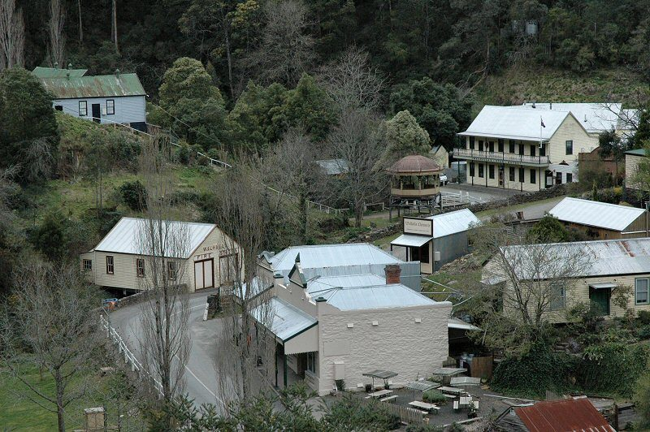
Photo: Dsidwell at English Wikipedia (Original text: David Sidwell) · Wikipedia, CC BY-SA 3.0 Walhalla
Deep in a narrow gorge, the gold-rush town of Walhalla folds into the hillside — timber cottages, a cemetery climbing the slope, the whistle of the restored railway. From here the track lifts away from Stringers Creek and into the ranges. Six hundred and fifty-five kilometres of high country run north from this point, all the way to Tharwa near Canberra.
-
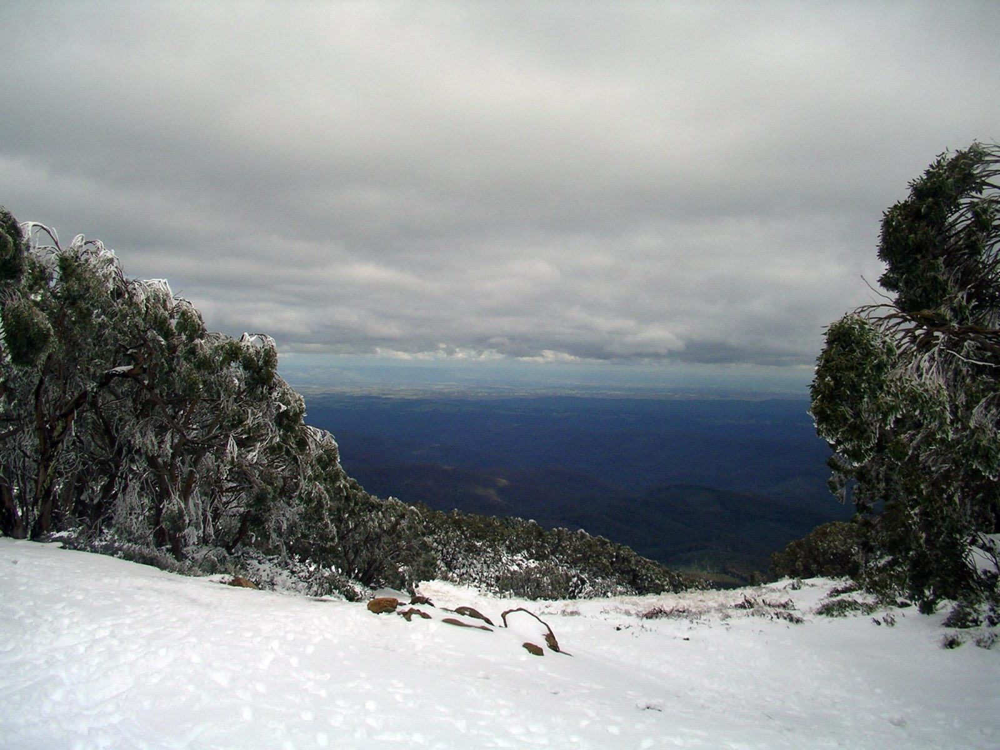
Photo: Alex Cohen · Wikipedia, CC BY-SA 3.0 Baw Baw Plateau
Above Mount Erica the forest opens onto the Baw Baw plateau, a rolling tableland of snow gums and sphagnum bog. Mist drags through the twisted trees, and boardwalk crosses the wettest ground. This is the southern anchor of the alps — the first of the herbfields and alpine silence that define the high country stretching north.
-
Mount Baw Baw
At 1,567 metres, Mount Baw Baw marks the plateau's high point and the end of the gentle beginning. The ski village sits quiet in summer; beyond it the track pitches down hard toward the Thomson. To the north, a serrated skyline of distant ridges marks a fortnight of high country still to be crossed.
-
Thomson River
The long descent bottoms out at the Thomson River, a cold clear run threading the valley floor. After days on exposed ridgelines the shade of the gums feels like another world. It is the last easy water for a while — the climb out is steep and dry, and reliable water grows scarce as the track regains the tops.
-
The Bluff
Rearing above the Howqua headwaters, The Bluff throws its cliff-line out over half of Victoria's high country. The climb is unrelenting, but the summit ridge near 1,725 metres pays it back in views that run to Buller and beyond. Cattlemen once drove herds across these tops each summer; their pack tracks still thread the grass.
-
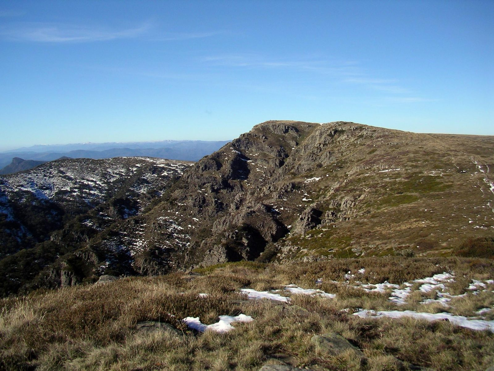
Photo: Alex Cohen · Wikipedia, CC BY-SA 3.0 Mount Howitt
Named for the explorer Alfred Howitt, this 1,742-metre summit sits at a hub of ridges where several great spurs meet. Macalister Springs, just below, is one of the few dependable soaks up high. Ahead the ground narrows alarmingly — the Crosscut Saw waits, and the country turns as sharp and thrilling as anywhere on the walk.
-
Crosscut Saw
Barely a boot wide in places, the Crosscut Saw jags north like the teeth its name promises. The route runs along the crest with air falling away on both flanks and the Viking and the Razor standing off to the east. It is the most exposed stretch of the whole track, and on a still day, the most exhilarating.
-
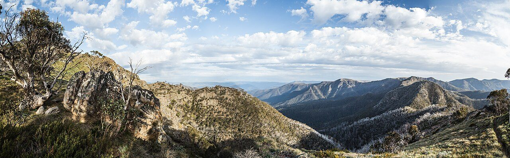
Photo: Tommyg 83 · Wikimedia Commons, CC BY-SA 4.0 Mount Speculation
A rough, rocky dome, Mount Speculation closes the Crosscut and opens a fine wild campsite among the snow gums. Fires long ago scorched these slopes, and silver skeletons of dead trees stand over the regrowth. Water sits a little below the saddle. Tomorrow the track abandons the peaks for the long, dry Barry Mountains.
-
Barry Saddle
For two days the track grinds across the Barry Mountains — dry ridges, few landmarks, and water that must be rationed and planned for. Barry Saddle is the low hinge in that traverse, a quiet notch in the forest. It is unglamorous walking, the connective tissue between the southern peaks and the great plateaus of the north.
-
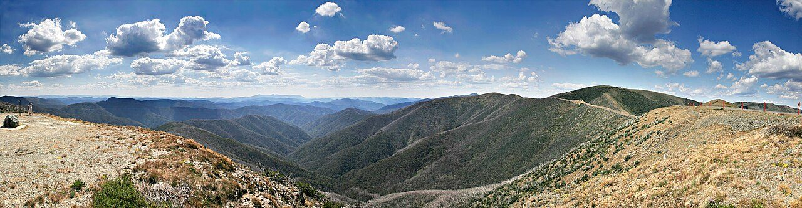
Photo: fir0002 flagstaffotos [at] gmail.com Canon 20D + Canon 17-40mm f/4 L · Wikimedia Commons, GFDL 1.2 Mount Hotham
The Great Alpine Road crests at Mount Hotham village, below the 1,861-metre summit, and for the first time in days there are buildings, a cafe, perhaps a lift running — a common resupply point. Beyond the resort the track climbs onto Mount Loch and the wind picks up, stepping out onto the Bogong High Plains, the roof of Victoria.
-
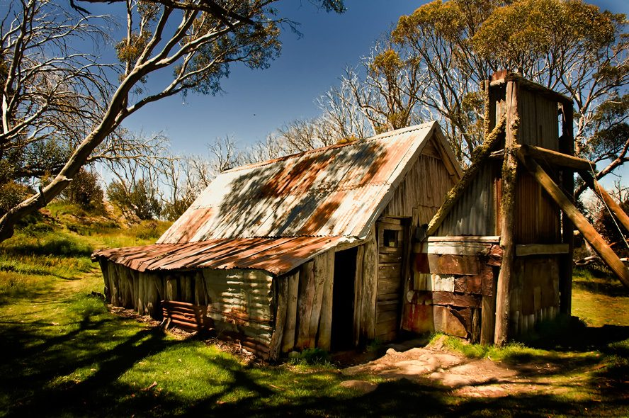
Photo: Rod Waddington from Kergunyah, Australia · Wikimedia Commons, CC BY-SA 2.0 Wallaces Hut
Slab timber and a stone chimney: Wallaces Hut, built in 1889, is the oldest cattlemen's hut left on the Bogong High Plains. Around it the plateau rolls away in herbfield and frost hollow, grazed for a century before the cattle were moved off for good. Snow gums lean with the prevailing wind. Nights up here bite, even in summer.
-
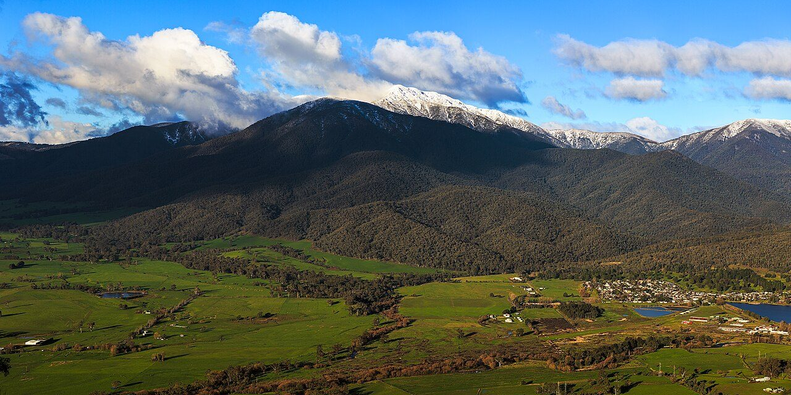
Photo: Joe Ritson · Wikimedia Commons, CC BY-SA 3.0 Mount Bogong
Victoria's highest ground rises to 1,986 metres at Mount Bogong, a broad whale-backed massif standing apart from the plateau. The climb up the Staircase Spur is long and steep, and the weather turns fast — walkers have died up here in white-outs. On a clear morning, though, the summit cairn looks out over the whole northern alps.
-
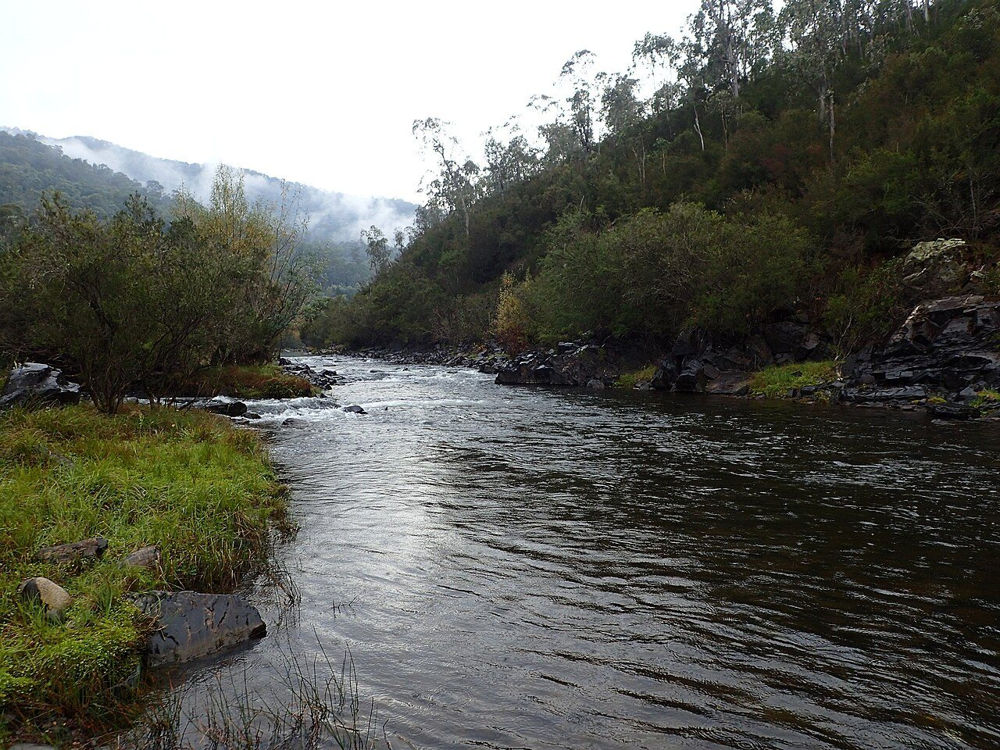
Photo: Mike Cline · Wikimedia Commons, CC BY-SA 4.0 Mitta Mitta River
After the tops, the track plunges to the Mitta Mitta River, a welcome band of green threading the valley. Willows and river flats replace the wind-scoured herbfields; frogs start up at dusk. It's a chance to wash, to soak sore feet, to gather water in quantity before the next long haul climbs toward the New South Wales border.
-
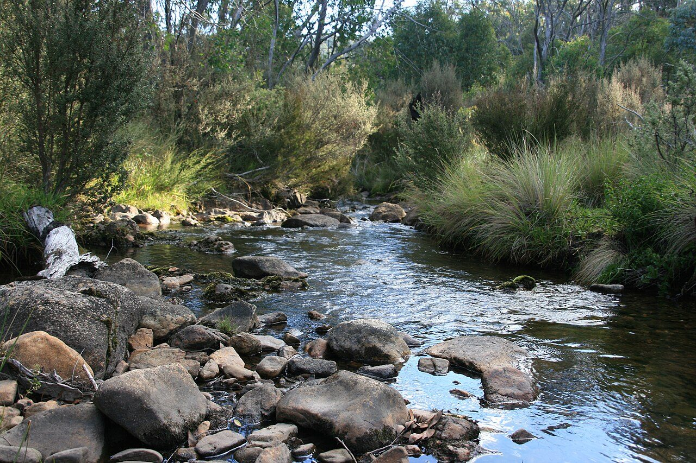
Photo: Griff en · Wikimedia Commons, CC BY-SA 4.0 Cowombat Flat
In a broad grassy clearing the Murray River begins — not a river yet, just a spring seeping from the peat at Cowombat Flat. A surveyor's marker records the Victoria–New South Wales border, and brumbies graze the tussock at the tree line. From this thin, icy trickle grows the continent's greatest river.
-
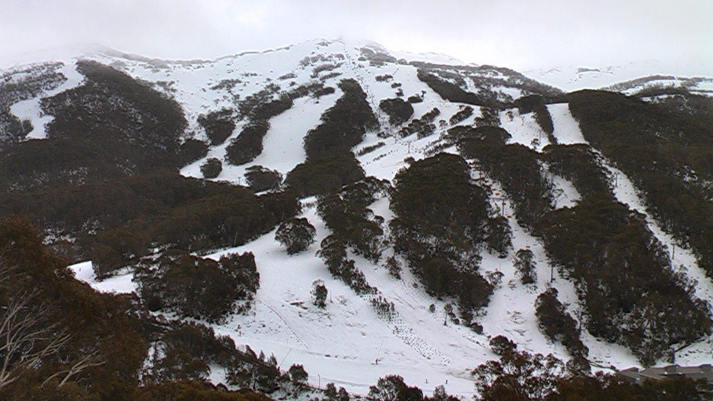
Photo: Picturesk · Wikipedia, CC BY-SA 3.0 Thredbo
Chairlifts hang idle over green summer runs as the track drops to Dead Horse Gap and into Thredbo village. Real food, a bed, a shower — the last proper comforts before Kosciuszko. The Thredbo River tumbles past the lodges. Beyond the village the track climbs onto the Main Range, toward the highest ground the continent has to offer.
-
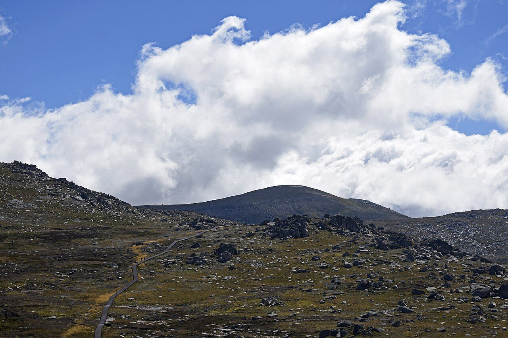
Photo: Ymblanter · Wikimedia Commons, CC BY-SA 4.0 Mount Kosciuszko
Everything on the walk has been building to this: at 2,228 metres, Mount Kosciuszko is the highest point in Australia. A paved path from Rawson Pass carries the last stretch, often busy with day walkers. Lake Cootapatamba, the highest lake on the continent, sits in its glacial hollow just below. Named by the Polish explorer Strzelecki in 1840, the summit is a gentle dome, not a spire.
-
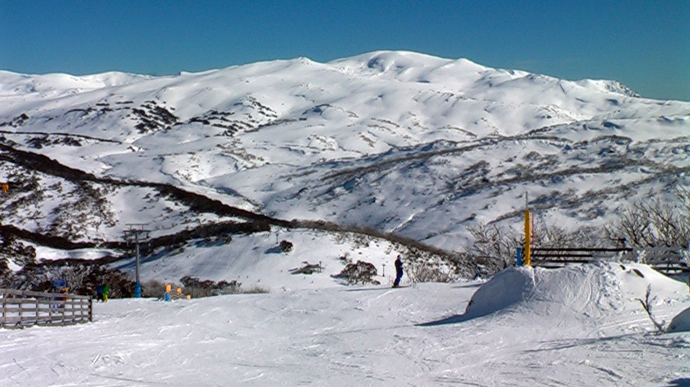
Photo: Picturesk · Wikipedia, CC BY-SA 3.0 Guthega
Below the Main Range the track meets Guthega, a small settlement built for the Snowy Mountains Hydro scheme. The Guthega Pondage mirrors the peaks; the Snowy River spills from its dam wall. The crowds fall away to the south — north lies the Jagungal Wilderness, the loneliest and least-tracked country of the entire route.
-
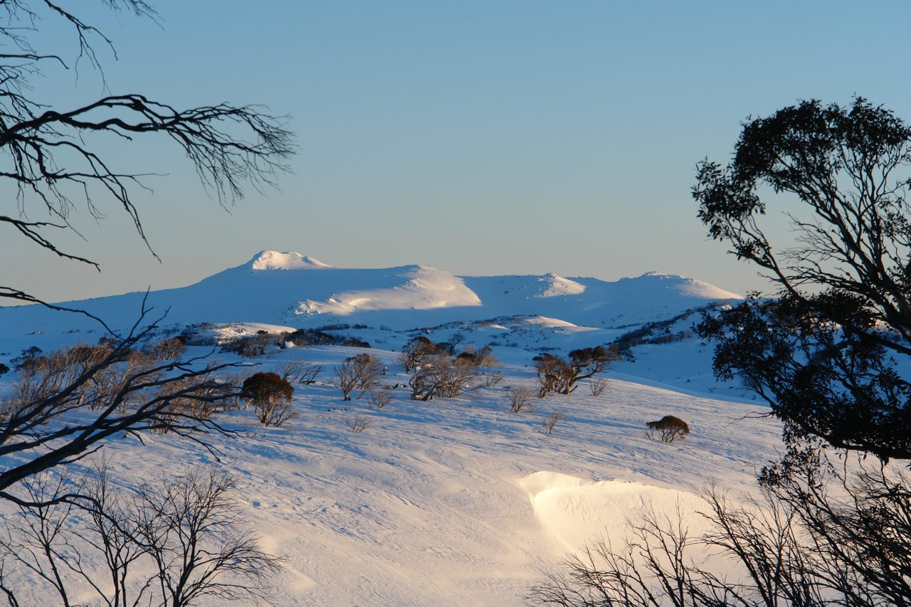
Photo: Jerry Nockles · Wikimedia Commons, CC BY-SA 4.0 Mount Jagungal
Alone on the northern plains, Mount Jagungal rises to 2,061 metres, a dark isolated cone visible for days in every direction. No road comes near; the wilderness that carries its name is among the remotest in the alps. Cattlemen's huts shelter in the folds below. Reaching its foot feels less like arriving and more like earning solitude.
-
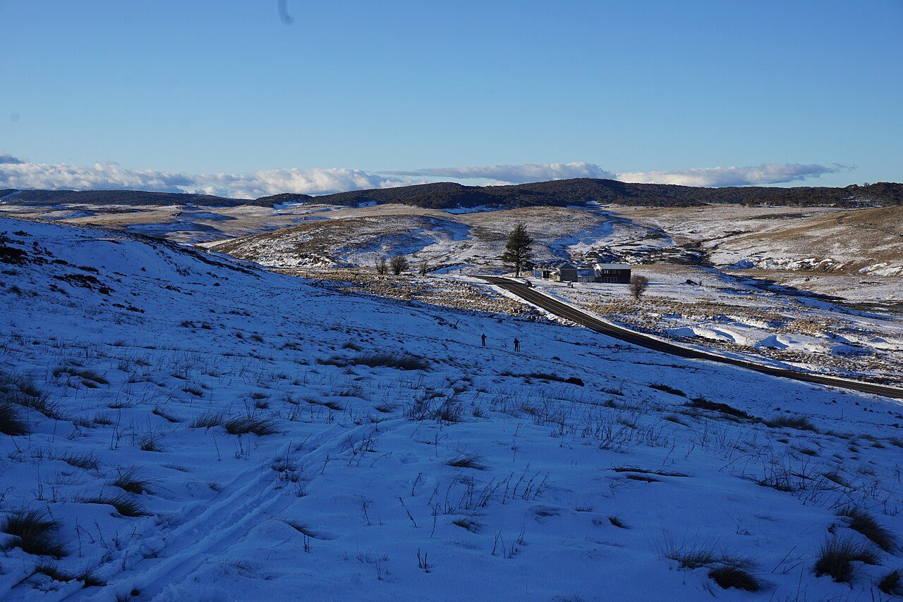
Photo: MDRX · Wikimedia Commons, CC BY-SA 4.0 Kiandra
Wind scours the empty flats at Kiandra, once a roaring gold town of thousands, now barely a chimney and a courthouse ruin. Gold drew the crowds in 1859; within a year most had gone. It was here, on these slopes, that Australian skiing was born in the 1860s. The silence now is total, and strangely moving.
-
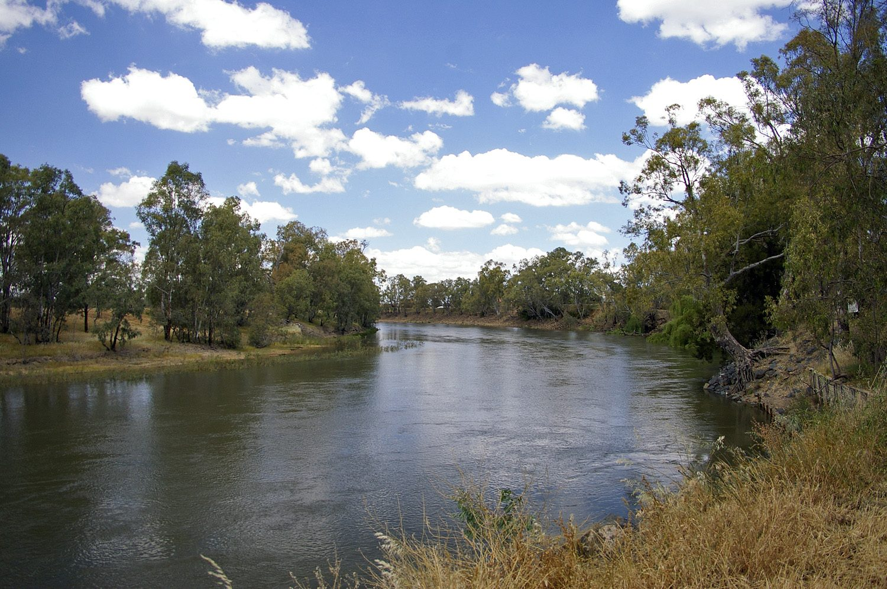
Photo: Bidgee · Wikipedia, CC BY 3.0 Murrumbidgee River
The track fords the young Murrumbidgee here, a clear alpine stream far from the wide brown river it becomes downstream. Grassy flats make easy camping, and platypus work the pools at dawn. Ahead, near Murrays Gap, lies the border of the Australian Capital Territory — the third and final jurisdiction of the traverse.
-
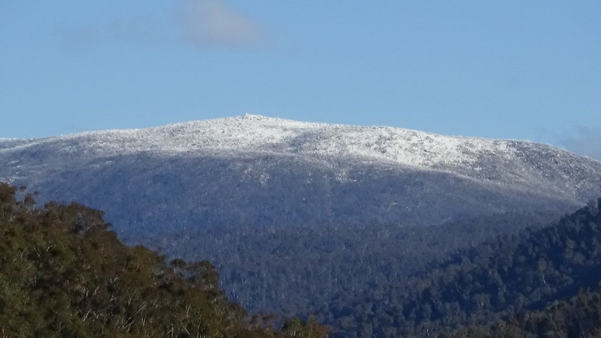
Photo: SandwichCafe · Flickr via Openverse, CC BY 2.0 Mount Bimberi
Rising to 1,913 metres, Mount Bimberi is the highest point in the Australian Capital Territory, standing on the border in trackless snow-gum forest. Few walkers come this way, and the summit sees more wombats than people. From here Canberra's ranges roll north and east — the end, at last, is within a few days' walk.
-
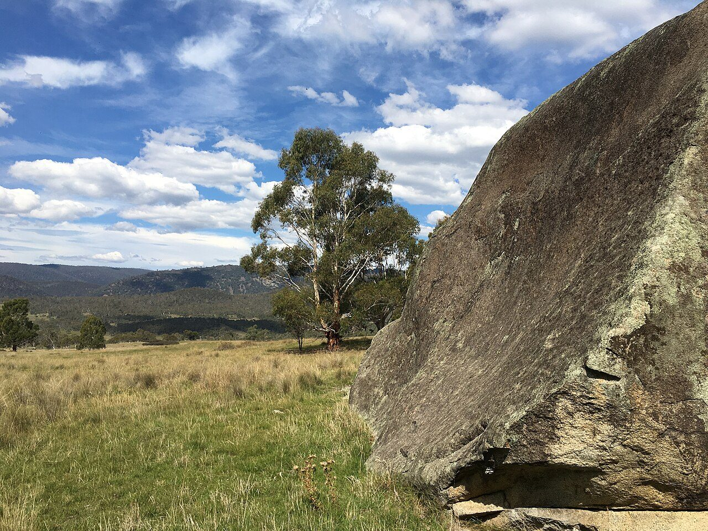
Photo: Adrian Setterfield · Wikimedia Commons, CC BY-SA 4.0 Yankee Hat
Beneath a granite overhang at Yankee Hat, ochre figures — kangaroos, people, a dingo — record thousands of years of Ngunnawal presence in these mountains. Namadgi National Park spreads its grassy valleys and rocky tors around the site, quieter than the alps behind. The high country is nearly done; the land begins to step down toward the plains.
-
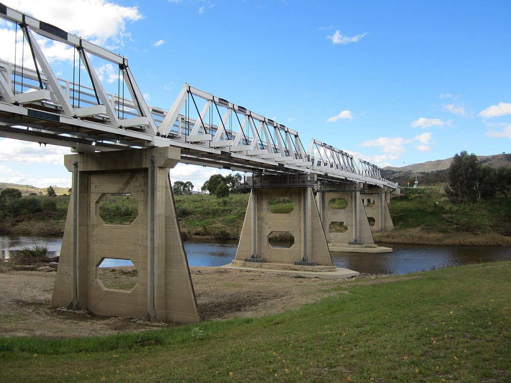
Photo: Nick-D · Wikimedia Commons, CC BY-SA 3.0 Tharwa
Three states and territories and 655 kilometres end at Tharwa, a small village on the Murrumbidgee within reach of Canberra. The old Tharwa Bridge spans the same river last crossed high in the mountains. Behind it lie the snow gums and herbfields, the Crosscut Saw, the Murray's source and Kosciuszko — the roof of the continent. Ahead, only the road out.
Walking the Australian Alps Walking Track
Your watch is already counting these steps. Watch Walks spends them on the Australian Alps Walking Track, all 655 km of it, and hands you each landmark as you reach it. There's no route recording, no account and no ads. The Inca Trail is free; this one is a one-time purchase with no subscription.
Other trails in Oceania
- Te Araroa 3,000 km · New Zealand
- Bibbulmun Track 1,000 km · Australia
- Larapinta Trail 223 km · Australia (NT)
- Cape to Cape Track 123 km · Australia (WA)
- Routeburn Track 32 km · New Zealand
- Overland Track 65 km · Australia (Tasmania)